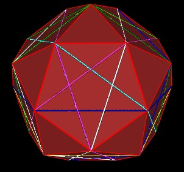

Marvin has shown me an interesting way to "fit" 5 VEs (a.k.a. Cuboctahedron) within the 30-Verti.
| Figure 1 The 30-Verti |
First consider a pentagon face of the 30-Verti. Draw a line across the face. You can continue the line all around the 30-Verti. These lines will pass through 6 of the pentagon faces to complete the cycle. Also, these lines, when projected onto a sphere, define a great circle.
| Figure 2 Blue lines all around 30-Verti |
Now divide the line into Golden Ratio sections. This is shown in the next Figure as a white ball. The green ball shows the half-way point along the blue line.
| Figure 3 Golden Ratio division of blue line |
Similarly, we divide all the other lines around the 30-Verti into Golden Ratio segments.
| Figure 4 Golden Ratio Segments |
It is then possible to place a VE in the 30-Verti such that 6 of the VE's vertice are exactly at these Golden Ratio segment points (white spheres).
|
Figure 5 Position and scale of 1 of the VEs in the 30-Verti |
Note that if we continue to add lines across the pentagons' faces we get pentagrams.
|  | |
| Figure 6 Pentagrams in the pentagons |
The lines of the pentagrams define 10 Great Circles around the 30-Verti.
Note that the intersection point of any of the 2 lines in the pentagram divides the lines into Golden Ratio segments.
We can add 4 additional VEs to this matrix. All of the vertices (5*12=60) of these VEs will occur at the Golden Ratio segment points.
| Figure 7 All 5 VEs in position |
In the next Figure, I have made the VEs a little bigger so that their vertices stick up through the 30-Verti pentagon faces. These clearly shows the poisitioning of the VEs' vertices at the Golden Ratio segment points.
| Figure 8 |
Note that the VE is a truncated Octahedron. So, we can consider the VE position, scale and orientation to also give the position, scale, orientation of the corresponding Octahedron.
| Figure 9 Corresponding Octahedron to one of the VEs | |
We can add in the other 4 corresponding Octahedra.
| Figure 10 5 Octahedra of the 5 VEs |
Then we have a structure which defines another, larger, 30-Verti.
| Figure 11 5 Octahedra define larger 30-Verti |
Here is a Figure showing the size of the original 30-Verti and the new, larger 30-Verti.
| Figure 11 Comparing 30-Verti scales |
This work is copyrighted, 2003 by Robert W. Gray and Marvin Solit.
You may not use any of this material, nor any material on our linked web pages,
without first obtaining written permission.